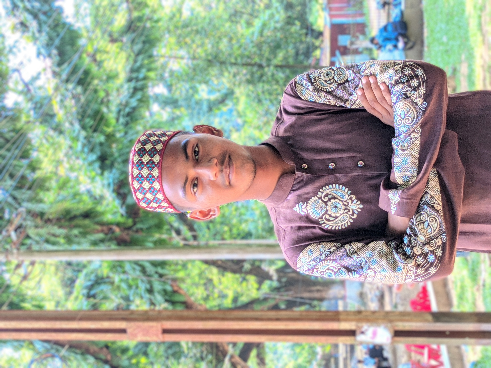

Mohammad Tarekul Islam
Web designer & Web developer
Greetings! I'm Mohammad Tarekul Islam,
a passionate web designer and web
developer with one year of professional experience. I specialize in creating visually appealing and user-friendly
websites that leave a lasting
impression.
With a keen eye for aesthetics and a love for clean, modern design, I bring your ideas to life using the latest web technologies. My skills encompass HTML, CSS, Bootstrap, and Tailwind CSS, which allow me to craft responsive and optimized websites that adapt seamlessly to various devices.